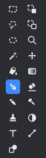
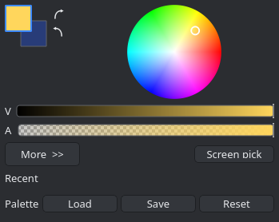
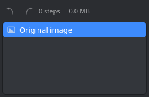
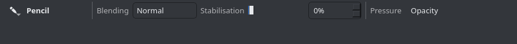
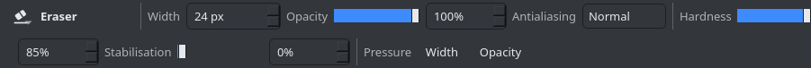
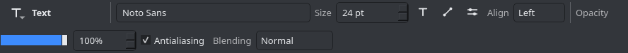
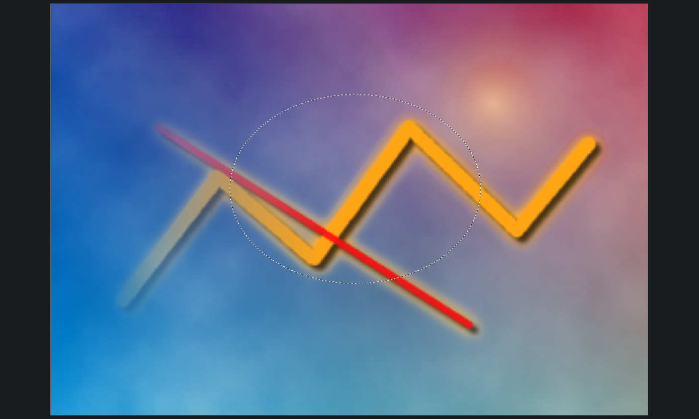
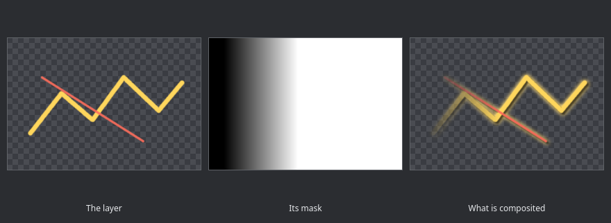
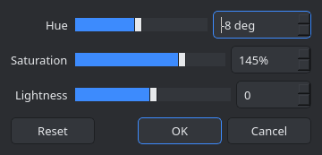

Using Tessel
Everything below describes the program as it ships in 1.1.0. If you would rather learn by poking at it, open an image, press F1 for the shortcut list and watch the status bar: whichever tool is active, its left hand end tells you what the mouse buttons do.
The interface

The menu bar
Seven menus, left to right:
- File
- New, Open, Open Recent, Save, Save As, Save All, Print, Close and Exit.
- Edit
- Undo and Redo; Cut, Copy, Copy Merged, Paste, Paste Into New Layer and Paste Into New Image; Select All, Deselect All, Invert Selection, Copy Selection and Paste Selection; a Selection submenu holding Feather, Grow, Shrink, Border and Free Transform; Erase Selection and Fill Selection.
- View
- Zoom In, Zoom Out, Fit to Window, Actual Size and Zoom to Selection; the Pixel Grid, Rulers and Selection Outline switches; a Units submenu of Pixels, Inches and Centimetres, which is what the rulers and the size dialogs then count in; and Full Screen.
- Image
- Crop to Selection, Resize Image, Canvas Size, the four flips and rotations, and Flatten. These act on every layer at once.
- Layers
- Add New Layer, Add Group and New Adjustment Layer; Delete, Duplicate, Merge Layer Down and Import from File; a Layer Mask submenu holding Add, Paint in Mask, Enable, Invert, Apply and Delete; Flip Layer Horizontal and Vertical and Rotate / Zoom Layer; Move Layer Up and Down and Toggle Layer Visibility; the four Go to Layer commands; and Layer Properties and Edit Adjustment.
- Adjustments
- The thirteen adjustments, built from the effect registry, so the menu and the program can never drift apart.
- Effects
- Repeat Last Effect at the top, then one submenu per category: Artistic, Blurs, Color, Distort, Noise, Object, Photo, Render and Stylize, and anything a plugin brought. About the Plugins, at the bottom, says what actually loaded.
An entry whose name ends in three dots opens a dialog; the rest apply straight away. At the right hand end of the menu bar sit six icon buttons rather than menus of their own: four switches for the Tools, History, Layers and Colors windows, then Settings, then Help, whose menu holds Keyboard Shortcuts (F1) and About Tessel.
The main toolbar
New, Open and Save; Undo and Redo; Cut, Copy and Paste; Crop to Selection and Deselect All; Resize Image and Canvas Size. The thumbnails of every open image live at its right hand end: click one to switch to it, and each has its own close button. Ctrl+Tab and Ctrl+Shift+Tab step through the same list.
The tool options bar
The row under the main toolbar belongs to the active tool. It starts with a button that drops down the full tool list (Alt+T) and the tool's name, and then holds that tool's own controls: width, opacity, antialiasing, blending, hardness, stabilisation, brush tip, tolerance, shape, font and so on. Changing one takes effect on the next stroke, and the settings stay put while you work.
The four panels
Tools, Colors, History and Layers stand in the corners of the window over the canvas, which runs the full width behind them: a panel is only as big as what it holds, and what is beside it is workspace rather than an empty column. Drag a panel by its title bar and the four corners light up; let it go over one and it pins itself there, with anything already in that corner moving aside, or let it go anywhere else and it floats where you put it. The pin in the title bar does the same without the dragging, and the cross closes the panel; the four buttons at the right of the menu bar bring them back. Where each panel sits is remembered between sessions, and Settings > Window puts them back where they started.
A list in a panel grows the panel as far as six rows and then scrolls, so a long history or a tall stack of layers never pushes its panel through its neighbour.
The Tools palette
Nineteen tools in a two column grid of icons, read left to right and then down: Rectangle Select and Move Selected Pixels; Lasso Select and Move Selection; Ellipse Select and Zoom; Magic Wand and Pan; Paint Bucket and Gradient; Paintbrush and Eraser; Pencil and Color Picker; Clone Stamp and Recolor; Text and Line / Curve; and Shapes. Hovering one shows its name and its key; the keys are listed in full on the shortcuts page.

Colors
The two swatches at the top left are the primary and secondary colours. Click one to make it the active colour, and use the two small arrow buttons beside them to swap the pair (X) or reset it to black and white (D). The colour wheel sets the hue and saturation of the active colour, the two ramps under it set value and alpha, and the palette grid at the bottom holds the fixed palette: left click takes a colour as the primary, right click as the secondary. More opens the numeric side: red, green and blue, hue, saturation and value, alpha, and a hex field. The picker beside it takes a colour from anywhere on the screen, and the three small buttons on the palette row load a palette, save one and restore the built in one.

History
Every step of the session, from the image as it was opened or created down to the most recent edit. Click any entry to move the document to that point, forwards or backwards; the two buttons at the top are Undo and Redo, and beside them is a running count of steps and of how much memory they hold.

Layers
The layer list runs top layer first, which is the order they are composited in, and it is a tree: a group has a triangle that folds its children away, and a layer is dragged into or out of a group by its row. Each row shows an eye for visibility, a thumbnail, the layer name and, underneath it, the opacity and the blend mode, plus group or adjust for the two kinds that are not ordinary layers and fx for a layer carrying effects. A layer that has a mask shows a second thumbnail beside the first: click either one to choose where painting lands. Double click a row to open Layer Properties, or the parameters of an adjustment layer. The buttons along the bottom are Add New Layer, Add Group, Delete Layer, Duplicate Layer, Merge Layer Down, Move Layer Up, Move Layer Down and Layer Properties.

The status bar
The left hand end is the hint for the active tool, or the last thing that happened, such as Created a new 900 x 620 image. The right hand end keeps four readouts together: the cursor position in image pixels, the selection bounds as Selection 378 x 286 at 270, 136, the image size, and the zoom, which is both a slider and an editable combo box: Window to fit the image, then fixed steps from 1 percent to 3200 percent, or any figure you care to type.
How the tools work
Ideas shared by all of them
- The right mouse button draws with the secondary colour wherever drawing with a colour makes sense.
- Holding the space bar pans the canvas with any tool active, and the middle mouse button does the same.
- Every drawing tool is clipped to the active selection, so a selection doubles as a stencil.
- Ctrl and the wheel zoom around the pointer; the wheel on its own scrolls.
- Most tools carry an Opacity percentage, an Antialiasing level and a Blending box holding the same fourteen blend modes the layers use, so a stroke can be multiplied or screened onto the layer without a second layer. Antialiasing runs None, Low, Normal, High and Maximum, which is how wide a ramp the edge of a stroke is given; Normal is what the old yes or no switch used to mean. One entry past the blend modes sits Overwrite, which is not a blend at all: the colour and the coverage of the stroke become the pixel, so a soft brush can fade what is under it out to the brush colour instead of only adding to it.
- Pressing a tool's letter again cycles through the tools that share it, and Shift with that letter cycles backwards.
Painting
- Paintbrush (B)
- Drag to paint, right drag to paint with the secondary colour. Width, opacity, antialiasing, blending, hardness, stabilisation, a tip and the two pressure switches. Hardness sets how wide the soft edge is: at the top of the range the stroke has a crisp rim, and at the bottom it is a faint haze that fades across the whole width. One stroke lays down one coat, so passing back over your own stroke does not darken it; release and draw again to build the colour up.
- Pencil (P)
- Single hard pixels, with no antialiasing. A blending box, stabilisation and the pressure switch for opacity: the nib is one pixel wide, so there is no width for pressure to work on.
- Eraser (E)
- Erases to transparency; a right drag erases softly. Width, opacity, antialiasing, hardness, stabilisation and pressure.
- Clone Stamp (L)
- Ctrl+click sets the source, then drag to paint copies of it. Aligned keeps the source at a fixed offset from the brush instead of starting over at every stroke, and Sample merged reads the composited image rather than the active layer.
- Recolor (R)
- Paints the primary colour only over pixels that match the secondary colour, within the tolerance you set.
- Paint Bucket (F)
- Fills an area of similar colour; a right click fills with the secondary colour. Fill is Contiguous or Global, and there is a tolerance, an opacity, antialiasing, sample merged and a blending box.
- Gradient (G)
- Drag to lay one down, hold Shift to constrain the angle. Five shapes (Linear, Linear reflected, Radial, Conical and Diamond), a mode of Colour or Transparency, an opacity, an optional dither and a blending box. A right drag runs the gradient the other way round, from the secondary colour to the primary.
Tablets, pressure and a steadier line
A graphics tablet is answered directly rather than through the mouse events the system synthesises from it, so a pen reports its pressure to the stroke it is drawing. What that pressure does is up to you, and the Paintbrush, the Pencil and the Eraser are the three tools that ask. The Pressure group at the end of their bar holds a Width switch and an Opacity switch, and both start off, so a mouse, which reports a full press the whole time, behaves exactly as it always did. Turn one or both on and the lightest touch the pen reports still leaves a mark, rather than nothing at all.
Stabilisation is a percentage beside them. It averages the last few positions of the pointer, the newest weighing the most, so the line follows the hand without the wobble: at 0 the stroke is exactly the positions that came in, and at 100 it is smoothed over sixteen of them. A slow, deliberate curve is what it is for; a fast stroke hardly notices it.


The Tip box on the Paintbrush paints with a shape of your own instead of the built in round one. Load from file takes a PNG and uses its alpha, or its luminance when it has none, as the stamp; the tip is trimmed to what it actually marks, fitted to the brush width and given the hardness setting, then stamped along the stroke closely enough that it reads as a line rather than a row of dots. Tips you have loaded stay in the box between sessions, and Round at the top of the list is always the way back.
Shapes, lines and text
- Line / Curve (O)
- Drag for a line, then drag the middle handles to bend it into a curve. Enter finishes, Esc cancels. The start and end caps are each Flat, Arrow or Round.
- Shapes (O again)
- Thirty of them, from Rectangle, Rounded rectangle, Ellipse and the polygons through five stars to Arrow, Chevron, Cross, Plus, Heart, Crescent, Cloud, Speech bubble, Ring, Pie wedge, Lightning and Teardrop. Drag to draw, Shift keeps the proportions. The style is Outline, Filled, or Outline and fill: the outline is drawn in the primary colour and the fill in the secondary.
- Text (T)
- Click and type. Enter adds a line, Ctrl+Enter or switching tools finishes, Esc cancels. Font family, size in points, bold, italic, underline and alignment, plus the usual opacity, antialiasing and blending. The text stays editable until it is committed, at which point it becomes pixels like everything else.
-
Shapes. -

Text.
Looking around and sampling
- Color Picker (K)
- Click to pick the primary colour, right click for the secondary. It can sample the active Layer or the whole Image, over an area of 1 x 1, 3 x 3, 5 x 5 or 9 x 9 pixels, and it can switch straight back to the previous tool, to the Pencil or to the Paintbrush once it has picked.
- Zoom (Z)
- Click to zoom in, right click to zoom out, or drag a rectangle to zoom into it.
- Pan (H)
- Drag to scroll the canvas. The space bar does the same without leaving the tool you are using.
Selections
There are four selection tools, all on S: Rectangle Select, Lasso Select, Ellipse Select and Magic Wand. They share a row of five combine modes at the left of the options bar, which decide what a new shape does to the selection that is already there:
| Mode | Result |
|---|---|
| Replace | The new shape becomes the selection. |
| Union | Adds the new shape to it. |
| Subtract | Cuts the new shape out of it. |
| Intersect | Keeps only what the two have in common. |
| Exclusive or | Keeps what belongs to one of them but not to both. |
While you drag, Ctrl adds and Alt subtracts, whichever mode the bar is set to, and Shift keeps a rectangle square or an ellipse circular. The lasso draws a freehand outline that closes itself when you let go. The magic wand selects a region of similar colour: drag up or down after clicking to adjust the tolerance without going back to the options bar, and choose Contiguous or Global flood, and whether it samples the layer or the merged image.
The selection is antialiased unless you turn that off, and it is stored as a mask, so it keeps soft edges rather than rounding everything to whole pixels. What it then does:
- It clips every drawing tool, every adjustment and every effect.
- Delete erases inside it, Backspace fills it with the primary colour.
- Image > Crop to Selection trims the whole image to its bounds.
- Edit > Copy Selection and Paste Selection move the shape itself between images, without the pixels.
- View > Selection Outline hides the marching outline when it is in the way, while leaving the selection in force.
- It is saved inside a
.tesselfile along with the layers.

Reshaping the outline
Edit > Selection works on the selection you already have, as one undoable step each: Feather (Ctrl+Alt+F) softens the edge by a radius in pixels, Grow and Shrink push it out or pull it in, and Border replaces it with a band of a given width along the inside of its edge, which is the quick way to outline something. Each asks for that one number in pixels and nothing else. Free Transform (Ctrl+T) in the same submenu is the Move Selected Pixels tool under another name.
Moving what is selected
Move Selected Pixels (M) lifts the selected pixels onto a floating buffer: drag it anywhere, nudge it with the arrow keys, or drag a corner handle to scale it. Enter drops it where it stands, and Esc drops it and clears the selection as well; Ctrl+Z takes the whole move back in one step. Move Selection (M again) slides the outline on its own and leaves the pixels where they are, which is the quickest way to reuse a shape somewhere else.
Layers, groups and masks
An image can hold any number of layers. Each one has a name, a visibility switch, an opacity from 0 to 100 percent and a blend mode, all four of which live in Layer Properties (F4) and preview on the canvas while the dialog is open.
The fourteen blend modes are Normal, Multiply, Additive, Color Burn, Color Dodge, Reflect, Glow, Overlay, Difference, Negation, Lighten, Darken, Screen and Xor. The same list appears in the Blending box of the drawing tools and in the effect dialogs, so a single stroke or a single effect can be composited the same way a whole layer would be.
From the Layers menu or the buttons under the layer list you can add, delete, duplicate, merge down, move up or down, toggle visibility, flip horizontally or vertically, and import any readable image file as a new layer. Rotate / Zoom Layer (Ctrl+Shift+Z) turns and scales the active layer about its centre, with an offset and an optional tiling of the result, and previews as you change the numbers. Image > Flatten (Ctrl+Shift+F) collapses everything into one layer.
Resizing and rotating are done in premultiplied alpha, so a transparent edge does not bleed a halo into the pixels next to it.
Groups
Add Group (Ctrl+Alt+G) puts an empty group beside the active layer, and dragging a row in the Layers panel moves a layer into it or out of it again. A group is a layer in its own right: it has a name, a visibility switch, an opacity, a blend mode and, if you want one, a mask. What it does not have is pixels. Compositing flattens its children first and then applies the group's own opacity, blend mode and mask to that result, which is the difference between a group and the same layers loose: hiding the group hides them all at once, and an opacity of 50 percent on the group fades the lot of them together rather than fading each one into the next. A group can hold a group, as deep as you care to nest them, and the triangle at the left of the row folds it away. Whether a group is folded is remembered with the document rather than with the window, so it survives undo and saving.
Layer masks
Any layer, a group included, can carry an 8 bit mask that scales its alpha while it is composited: white shows the layer, black hides it, and the greys in between fade it. Nothing is thrown away, which is the point. Where a mask hides something, taking the mask off brings it back.

The mask is an ordinary grey raster, so there is nothing new to learn to paint one: Layers > Layer Mask > Add gives the layer a white mask and points the tools at it, and from then on every brush, gradient, bucket fill, adjustment and effect writes into the mask instead of into the pixels, clipped by the selection the same way they would be anywhere else. The layer's row in the Layers panel grows a second thumbnail beside the first; click either one to say where the next stroke should land, and the one with the frame round it is the one you are painting. Paint in Mask in the menu is the same switch. The rest of the submenu:
- Enable Layer Mask
- Turns the mask off and on without losing it, so you can see what it is hiding.
- Invert Layer Mask
- Swaps what is hidden for what is shown.
- Apply Layer Mask
- Bakes the mask into the pixels and drops it. The picture does not change; it simply stops being undoable without the history.
- Delete Layer Mask
- Throws the mask away and leaves the pixels as they were.
All of these are ordinary undoable steps. A mask painted in grey keeps the softness of the brush that painted it, so a feathered edge is simply a soft stroke in the mask.
Adjustments and effects
Both come from the same registry, and the difference is only where they sit. The Adjustments menu holds the thirteen that change colour without changing shape: Auto Level, Black and White, Brightness / Contrast, Color Balance, Color Temperature, Curves, Hue / Saturation, Invert Alpha, Invert Colors, Levels, Posterize, Sepia and Threshold. The Effects menu holds the other forty, in nine submenus:
| Category | Effects |
|---|---|
| Artistic | Oil Painting, Pencil Sketch, Ink Sketch, Mosaic Tiles |
| Blurs | Gaussian Blur, Unfocus, Motion Blur, Radial Blur, Zoom Blur, Fragment, Surface Blur |
| Color | Quantize, Duotone |
| Distort | Bulge, Twist, Polar Inversion, Tile Reflection, Dents, Frosted Glass, Pixelate, Crystalize |
| Noise | Add Noise, Median, Reduce Noise |
| Object | Drop Shadow, Outline Object, Outer Glow |
| Photo | Sharpen, Glow, Vignette, Soft Portrait, Red Eye Removal |
| Render | Clouds, Julia Fractal, Mandelbrot Fractal, Checkerboard |
| Stylize | Edge Detect, Emboss, Relief, Outline |
How the dialogs preview
An effect declares its parameters and nothing else: an integer, a double, a switch, a choice, a colour, an angle, an offset or a curve. The dialog is generated from that list, which is why every effect in the program looks and behaves the same way and why no effect carries any widget code of its own.

Every change previews straight onto the canvas, at the real zoom and over the real layer, not in a thumbnail. The preview is pushed through the active selection, so only the part that would change is shown changing, and it is debounced by a few tens of milliseconds so that dragging a slider stays smooth. Reset puts the parameters back to their defaults, Cancel drops the preview and leaves the layer untouched, and OK commits a single undoable step. Ctrl+F then repeats that effect on the next layer or the next image with the same settings, without opening the dialog again.
Applying an effect from these menus writes pixels, and that is sometimes exactly what you do not want. The same effects can be kept live instead, on an adjustment layer or in a layer's own stack: see the next section.
Curves and Levels
These two have hand written dialogs, because a generated one could not do them justice. Both draw the histogram of the current layer behind the controls.
-

Curves: click to add a control point, drag to move it, right click to remove it. The transfer map is Luminosity or the separate colour channels, and Reset channel clears just the one you are on. -

Levels: input black and white, gamma, output black and white, with the red, green and blue channels switchable one at a time and an Auto button that finds the ends for you.
Adjustment layers and effect stacks
There are two ways to keep an effect live rather than painted in, and the difference between them is what the effect is about.
An adjustment layer
Layers > New Adjustment Layer lists every adjustment and then every effect, in the same order the Adjustments and Effects menus list them, plugins included. Pick one and a layer appears above the active layer holding that effect and no pixels at all. What it does is apply the effect to everything composited below it inside its group: put it at the top and it grades the whole image, put it inside a group and it reaches no further than that group's other children.
It opens on its parameters straight away, and it is never finished with. Double click the layer, or use Layers > Edit Adjustment, and the same dialog comes back with the values it had. Changing them changes the canvas while the dialog is open, and OK records one undo step; Cancel puts the values back. Hide the layer, change its opacity, give it a mask, drag it up or down the stack: it is a layer, and all of that works on it.

A stack on an ordinary layer
An ordinary layer can carry a list of effects of its own, applied to its pixels on the way into the composite while the stored pixels are left exactly as they were. The list lives in Layer Properties (F4), under the name and the blend mode, and the Layers panel writes fx beside any layer that has one.

The buttons under the list add an effect (from the same menu the adjustment layers come from), reopen the parameters of the selected entry, move it up or down the order, remove it, and flatten the lot. The tick beside each entry turns it off without losing its settings, and a double click on an entry is the quick way to its parameters. Every one of those is an undo step.
Flatten writes the result of the stack into the pixels and empties the list. The picture does not change; what was re-editable simply stops being so, which is what you want once the look is settled and the stack is costing more than it is worth.
An entry that names an effect this build does not have, most likely a plugin that is not installed, passes the pixels through untouched instead of being dropped. The document still opens, composites and saves, the entry says (not installed) in the list, and installing the plugin again brings it back to life.
Files and formats
.tessel- The native format: a zip holding one PNG per layer, a JSON manifest with the names, opacities and blend modes, the selection, a flattened image and a thumbnail. The manifest nests, so a group is an entry holding its children, and a layer's mask, its effect stack and the single effect an adjustment layer is are all written beside it. Everything comes back as it went in. The file is written to a temporary name and moved into place, so an interrupted save cannot destroy the previous one.
.ora- OpenRaster, which keeps layers, opacity and blend modes and is read by Krita, GIMP and MyPaint. This is the format to use when the image has to leave Tessel with its layers intact. Groups travel as nested stacks, which is OpenRaster's own way of holding them. The format has neither layer masks nor adjustment layers, so a mask is baked into the pixels that are written, and everything below the topmost adjustment layer on a level is written as the one layer it composites to, with the adjustment already in those pixels. Read back, the image looks the same; what is lost is the separation of the layers that were folded together.
- Flat images
- PNG, JPEG, BMP, TIFF, WebP, TGA, GIF and ICO, plus whatever else the Qt image plugins on the system can handle. Saving to one of these flattens the image. For the lossy formats a dialog asks for the quality first and keeps a live estimate of the resulting file size next to the slider.
Paint.NET files. .pdn cannot be read: the format is an
undocumented serialisation of .NET objects. Tessel says so when one is opened, and
suggests exporting .ora or .png from Paint.NET instead.
Autosave and recovery
Every image that has unsaved changes is written to a recovery copy on a timer, by
default every two minutes. The copy is a .tessel file without the merged
image and the thumbnail, since nothing but Tessel ever reads it back, and it is written
on a worker thread, so a large image does not make the program pause while you are
drawing in it. None of this touches the file you are editing: Save is still Save.
Each run of the program keeps its recovery copies in a directory of its own, under the user data directory, with a lock file in it. That lock is how the next run tells a session that crashed from one that is still going: the lock of a dead process can be taken over, the lock of a live one cannot, so two copies of Tessel running at once never fight over the same files. A run that ends cleanly deletes its directory on the way out, which is what makes anything left behind mean this run did not finish.

The dialog lists what was found, with the size of each copy and how long ago it was written, and the original path of each in its tooltip, since that is the one thing that tells two images of the same name apart. It asks once, about all of it:
- Recover
- Opens every image as an unsaved document, so a Save writes it back where it came from, or asks where to put it when it never had a home. A copy that could not be read is kept rather than deleted, so there is still something to try again with.
- Discard
- Deletes the recovery files.
- Decide Later
- Leaves them alone and asks again next time. Files nobody ever decides about are deleted once they are older than the number of days set in Settings, so the directory does not grow for the lifetime of the installation.
Separately from all that, Tessel remembers which images were open when it closed and offers to reopen them at the next start, with the one you were looking at in front. Only images with a path on disk are worth remembering, so an unnamed one is a matter for the recovery copies instead. Files named on the command line say plainly what you want opened right now, so they take the place of the offer rather than queueing behind it.
Plugins
The effect list is not fixed. An effect can be written outside the program, as a shared library, and whatever is found at startup appears in the Effects menu under the submenu it asked for, with the same generated dialog, the same live preview and the same place in New Adjustment Layer and in a layer's effect stack as the built in ones.
Tessel reads a plugins directory in three places, in this order: the per
user application data directory, which on Linux is
~/.local/share/Tessel/Tessel/plugins; the system wide ones, such as
/usr/share/Tessel/Tessel/plugins; and plugins beside the
executable, which is what makes a build tree work.
Effects > About the Plugins says what actually happened: the directories that were read, every plugin that loaded with the effects it brought, and every file that was refused together with the reason. A failure is announced in the status bar at startup as well, so a plugin that quietly did not load is not quiet. A plugin built against a different version of the interface is refused by name rather than loaded, because the two sides pass C++ objects to each other.
Writing an effect plugin walks through the whole thing, with the example plugin's source quoted in full.
Settings and languages
The cog at the right hand end of the menu bar opens Settings, which is short on purpose:
- Appearance: the theme, Dark or Light, and the language. The theme applies immediately, icons and all, because they are redrawn in the new foreground colour rather than reloaded.
- New images: the default width and height offered by File > New.
- History: the maximum number of steps and the memory budget in megabytes. The undo stack is capped by whichever it reaches first.
- Saving work: whether a recovery copy is kept of every changed image and how many minutes apart, whether the images from the last session are offered again at startup, and how long an abandoned recovery file is kept before it is deleted unasked. See Autosave and recovery.
- Window: reset the panel layout, if the panels have been dragged somewhere you would rather they were not.
Window geometry, where the panels sit, recent files, the measurement unit and the view switches are remembered between sessions.
Languages
The interface is translated, and ships in English and Russian. The Language box in Settings offers System, English and Russian: System follows the system locale, which is what a fresh installation does. Qt's own translations, which cover the buttons of the standard dialogs and the file chooser, are loaded from the Qt installation for the same language.
The choice takes effect the next time Tessel starts, and the program says so when you make it. That is deliberate rather than lazy: every menu, every panel and every undo step already recorded was built in the language the window started in, and switching halfway through would leave the two mixed.
All the languages are compiled into the executable, so there is nothing to install
beside it. Adding one means adding a file under translations/ and
rebuilding; the repository's README has the steps.